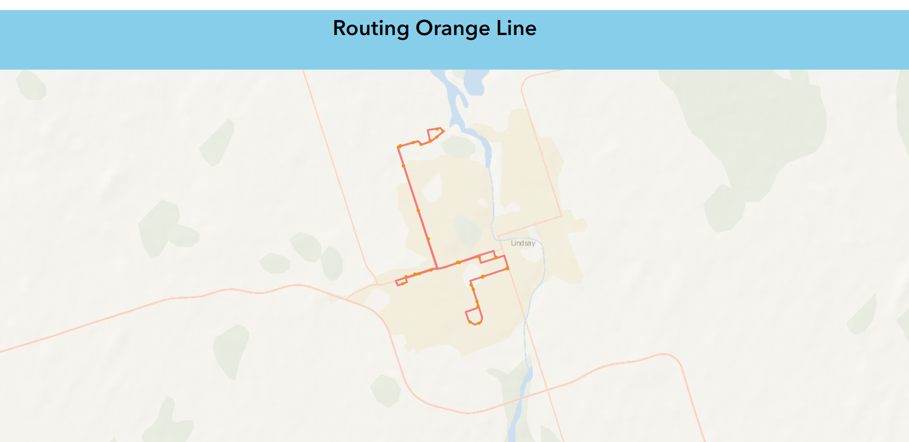

Attempt 2: ArcGIS Maps SDK
We tried to solve the problem using ArcGIS Maps SDK. Here's what we found:
What is ArcGIS Maps SDKs?
ArcGIS Maps SDKs(Software Development Kit) are developer products for building mapping and spatial analysis applications for web browsers, native devices, and game engines. The SDKs contain an API, API reference, documentation, tutorials, samples, and IDE integration. ArcGIS Maps SDKs are designed to work optimally with the ArcGIS system and provide comprehensive GIS capabilities.
How can ArcGIS Maps SDKs be used for routing to get solution for our problem?
For routing we mostly looked at the two different ArcGIS Maps SDKs
Requirements:
ArcGIS Developers or ArcGIS Online Accunt to access the dashboard and API Key.
API key can be accessed by creating ArcGIS Developers account for free.
- Visit ArcGIS Developers at: ArcGIS Developers
- Click on the Start building for free( if you do not have account)or Sign In
- Within Dashboard/ API keys create new API key and add allowed Referrers where that API keys can be used for security reasons
Step 2: Explore Quick Start Guide Tutorial
- Access the tutorial code at: Find-a-route-and-directions
- Copy the code using the sandbox at: Sample Code
Step 3: Review the results of the tutorial

Step 3: Make other customizations to the code, including:
- change the map center
- change the Feature layers of route
- change the feature layer of busstops
- Customize css
- add a title
- change the map size for the zoom extent
Thes errors were found while running the code
- Make changes to the debug the errors
- Make other customizations to the code, like:
- change zoom extent
- change header style extent
Step 5: Review the results of ArcGIS Maps SDK for Javascript.
For the trial, only one route and stops for that route only was used.

TAKE AWAYS
| Advantages |
Disadvantages |
| Esri provides various open source libraries, tools, and APIs to enhance applications |
Needs lots of customization, which can be time consuming |
| Lots of documentation and tutorials available |
Uses programming languages, which not everyone is comfortable with |
It was decided that this was not a suitable web solution for the issue we are trying to solve.